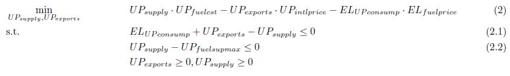
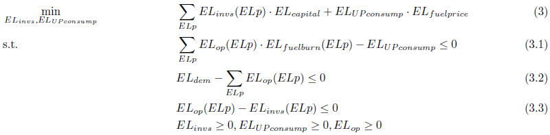
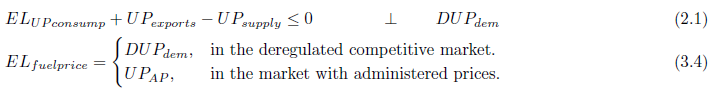

Example
Here is an example of designing a model with two sectors (sub-models), upstream and power. The example follows all KEM style guide, and shows how to build an MCP model using EMP.
This is a simple equation $$\frac{1}{2}x + 2 \geq 5$$
The upstream sector supplies fuel to the power sector, at price set by the regulator, and the export market, at international prices; meanwhile, the power supplies electricity to a fixed demands. The power sector has two investment options in type of technologies; low investment cost with high fuel consumption (low efficiency), and high investment cost with low fuel consumption (high efficiency).
Before defining the problem, let’s define the sets and parameters needed for the model
sets
ELp 'power plant types. (e.g. single or combined cycle turbines)' /GT, CC/
;
scalars
UPfuelcst 'Marginal fuel production cost USD per bbl' /1/
UPintlprice 'International price for fuels in USD per MMBTU' /100/
UPfuelsupmax 'Maximum fuel supply in MMBBL Million Tonnes' /25/
ELdem 'Total power demand' /2/
UPAP 'Administered fuel price' /1.2/
ELUPpflag 'Flag used to control the upstream fuel price, 1-marginal' /0/
;
parameters
ELfuelburn(ELp) 'BBL Metric Ton fuel burn per GWh' /GT 1.3, CC 1.0/
ELcapital(ELP) 'Capital Cost of equipment million USD per GW' /GT 0.5, CC 1.0/
;The linear optimization problem of the model is presented in equation block (1). The objective function of this model, the total costs, is what needed to be minimized in order to find an optimal supply of fuel and power, with the assumption of perfect competitive fuel market. The constraint (1.1) represents the fixed demand for power. (1.2) limits the production of electricity to the total available capacity. (1.3) is the fuel supply constraint. (1.4) is the fuel demand balance, the total demand for fuel from export and consumption by the power sector. Finally we define all variables to be positive.
variables
UPobjval 'Objective value for the upstream sector'
ELobjval 'Objective value for the power sector'
ELfuelprice 'Fuel prices set by the regulator'
;
positive variables
UPexports 'Total fuel exports'
UPsupply 'Total fuel supply'
ELop(ELp) 'Generation of electricity by each technology'
ELinvs(ELp) 'Total investment in each technology'
ELUPconsump 'Total fuel consumption, cross-cutting activity'
;
To emphasize the optimizing decisions for the two integrated sectors, we can split (1) into two separate optimization problems for the upstream and power, equation block (2) and (3) respectively. Before splitting the two sectors, we need to define a free variable ELfuelprice representing the price at which fuel is purchased by the power sector from the upstream sector, and set it to the marginal cost of fuel.
* Equation (2)
UPobjective..
UPobjval
=e=
UPfuelcst*UPsupply
-UPintlprice*UPexports
-ELfuelprice*ELUPconsump
;
* Equation (2.1)
UPsup..
UPfuelsupmax
-UPsupply
=g= 0
;
* Equation (2.2)
UPdem..
+UPsupply
-UPexports
-ELUPconsump
=g= 0
;In (2), the upstream sector minimizes its objective function subject to the fuel demand and supply constraint, (2.1) and (2.2). The objective function includes the cost of supplying fuel UPsupplyUPfuelcst less than revenues from exports UPexportsUPintlprice as well as revenues from selling to the power sector ELUPconsumpELfuelprice. The revenues from the power sector is exogenous to the upstream sector, and this variables can be called a cross-cutting activity variable because it is used to communicate the fuel demand by the power sector.
* Equation (3)
ELobjective..
ELobjval
=e=
sum(ELp,
ELcapital(ELP)*ELinvs(ELp))
+ELfuelprice*ELUPconsump
;
* Equation (3.1)
ELfuelcons..
ELUPconsump
-sum(ELp,
ELfuelburn(ELp)*ELop(ELp))
=g= 0
;
* Equation (3.2)
ELsup..
sum(ELp,
ELop(ELp))
-ELdem
=g= 0
;
* Equation (3.3)
ELcapacity(ELp)..
ELinvs(ELp)
-ELop(ELp)
=g= 0
;The power sector optimization problem minimizes its costs including fuel purchase cost plus investment costs, subject to the power demand and capacity limit (3.1), (3.2), and (3.3).
Rather than solving the model as standard linear optimization problem, we would like to represent the equivalent Linear Complementarity Problem (LCP) by driving the optimality conditions for (2) and (3):
- Defining the Lagrange multipliers, or dual variables, associated with inequality constraints in (2) and (3).
- Express the Lagrangian of each sectors optimization problem.
- Derive the stationarity/Karush-Kuhn-Tucker (KKT) conditions associated with (2) and (3).
that can only take on a positive value when the constraint is binding. Here is an economic interpretation of this complementarity theory. When the supply of electricity equals demand at equilibrium the marginal value, or price, of the electricity can be positive, DELsup > 0. If the market is oversupplied, then the marginal value, or price of electricity is zero, DELsup = 0.
Fortunately, we do not need to derive the KKT conditions, and define the Lagrangian multipliers explicitly; Extended Mathematical Programming (EMP) framework automates all this process. EMP can take care of defining the dual variables and deriving the KKT conditions using the primal constraints. If we need to use a dual variables in some of the primal equations, we can configure EMP and pass to it the explicit dual variable(s) with their primal constraint(s); we are using this feature to communicate the marginal cost of fuel to the power sector if we want to represent a competitive market.
Now, let us define an explicit dual variable for the fuel cost as well as defining an identity that controls the fuel price for the power sector, ELfuelprice:
* Equation (3.4)
* ELUPpflag is a flag set by the market regulator
ELfuel_regulator..
ELfuelprice
=e=
DUPdem$(ELUPpflag=1)
+UPAP$(ELUPpflag<>1)
;Here, we are defining ELfuelprice as an endogenous variable to the power sector to reflect the policy impact. Since this variable is just an identity that defines a given policy, it does not constrain any sectors primal variables. There are many method to control the prices such as introducing an extra agent that represent market regulator, but it implemented this way for the simplicity.
What is left now is coding the linear optimization problem (objective function and primal constraints) for the separate integrated sectors (2) and (3). And then, configure EMP to compile the equilibrium conditions as follow
* Generate emp.info file to construct the MCP
file myinfo /'%emp.info%'/;
put myinfo 'equilibrium';
* Fuel sectors objective problem in EMP.
put / 'min', UPobjval;
Put UPsupply; Put UPexports;
Put UPobjective; Put UPsup; Put UPdem /;
* Power sectors optimization problem in EMP
Put / 'min', ELobjval;
loop(ELp, put ELop(ELp); put ELinvs(ELp);); put ELUPconsump;
* Variables for fuel prices
put ELfuelprice;
put ELobjective; put ELfuelcons; put ELsup;
loop(ELp, Put ELcapacity(ELp) ); put ELfuel_regulator;
* declare symbolic variable mu as dual on UPdem
put 'DualVar DUPdem UPdem';
putclose / myinfo;
model example /UPobjective,UPsup,UPdem,ELobjective,ELfuelcons,
ELsup,ELcapacity,ELfuel_regulator/;
solve example using EMP;Here is the source code for the example model: example.gms.